Avant d’explorer les scénarios de modélisation
Quel intérêt à étudier la fiabilité des scénarios de
modélisations ?
Dans un cas de figure où les scénarios de modélisation sous-estiment l’évolution de l’épidémie (A), le risque est de ne pas réagir, ou pas assez. Inversement, si les scénarios surestiment l’évolution de l’épidémie (B), le risque est de surréagir et notamment de prendre trop de mesures aux effets délétères sans qu’elles soient justifiées. En effet, la plupart des mesures de freinage de l’épidémie (confinement, couvre-feu, fermeture de classes, fermetures de lieux publics) ont des impacts sanitaires, sociaux et économiques négatifs. Par conséquent, surréagir face à l’épidémie n’est pas une bonne chose (de même que ne pas réagir assez).

Une explication plus détaillée est disponible sur la page Impact.
L’intérêt des modélisations n’est-il pas justement d’empêcher
qu’elles se produisent ?
Un argument souvent entendu au sujet des scénarios de modélisation est le suivant : comme le scénario permet d’anticiper le pire, il mène à prendre des mesures qui vont justement empêcher que le scénario modélisé se produisent, ce qui expliquent le décalage entre le scénario de modélisation et la réalité (où des mesures de freinage ont été prises!). Effectivement, il n’est pas possible d’établir une comparaison dans ce cas de figure.

Cependant, les scénarios de modélisation intègrent souvent plusieurs hypothèses sur les mesures de freinage qui pourraient être mises en place. Ici, nous ne comparerons la réalité qu’avec des scénarios où les mesures de freinage mises en place avaient aussi été modélisées.

Ainsi, la comparaison entre scénarios de modélisation et réalité permettra bien d’évaluer si ceux-ci ont bien anticipé la réalité.
Retour sur les principaux scénarios de modélisation
1. Mars 2020, les modélisations qui ont conduit le monde à se confiner
Contexte
En mars 2020, l’incertitude sur les conséquences qu’allaient avoir le covid-19 était grande. Lorsque l’Italie a commencé à être fortement touchée à la mi-mars, de nombreux pays européens ont réalisé que le covid-19 risquait d’avoir un impact significatif. Pour anticiper l’évolution de la pandémie, les décideurs se sont tournés vers le domaine de la modélisation épidémiologique.
Une équipe de scientifiques de l’Imperial College (Londres), menée par le Professeur Neil Ferguson, a notamment publié le 16 mars le rapport qui a conduit de nombreux gouvernements européens, dont le gouvernement français, à confiner leur pays. Les scénarios présentés dans le rapport anticipaient, en l’absence de mesures strictes, de l’ordre de 500 000 morts en moins de 3 mois au Royaume-Uni, et des chiffres similaires pour la France. En revanche, le rapport avançait que la mise en place de mesures strictes (type confinement) permettrait de contenir la vague et serait la seule manière d’éviter une saturation du système hospitalier. Se fiant à ce rapport, les gouvernements ont pour beaucoup choisi de mettre en place des mesures strictes.
Bien évidemment, les projections décrivant ce qu’il devrait se passer en l’absence de mesures ne peuvent être comparées avec ce qui s’est réellement passé dans les pays confinés. C’est d’ailleurs l’un des contre-arguments les plus communs aux détracteurs des modèles épidémiologiques: c’est précisément grâce aux mesures que les scénarios de modélisation ne se sont pas réalisés.
Mais il y a un pays qui nous permet de tester la validité des scénarios de modélisation: la Suède. Lors de la première vague, la Suède a choisi de ne pas se confiner, préférant se reposer des mesures plus légères. Il est donc possible de comparer ce que prévoyaient les scénarios pour la Suède et la réalité.
Comparaison des scénarios aux données réelles
L’appendice du rapport 12 de l’Imperial College, publié le 26 mars, contient des modélisations de l’épidémie en Suède.
Les 2 premiers graphiques représentent les pics de lits occupés en réanimation et à l’hôpital. Les barres grises représentent les scénarios de l’Imperial College : confinement strict précoce, confinement strict tardif, et aucune mesure. Les barres rouges représentent la réalité. La Suède ayant mis en place des mesures de distanciation sociale sans pour autant imposer un confinement, les chiffres observés auraient dû se trouver quelque part entre les scénarios “confinement” et “aucune mesure”. La réalité est tout autre. Alors même que la Suède n’a PAS confiné sa population, les scénarios AVEC confinement surestiment le pic de lits utilisés de 100% à 1000%.
La 3e figure présente en gris les différents scénarios de l’Imperial College relatifs à la mortalité, et en rouge le nombre de morts réels. Là encore, les scénarios surestiment largement la mortalité. Le nombre de morts réels correspond au scénario de confinement précoce, ce qui n’a évidemment pas été l’approche suivie par la Suède. Les scénarios intermédiaires de distanciation sociale surestiment quant à eux la mortalité de 200% à 600%.
Pic de réanimation

Pic hospitalier

Décès

Impact politique et médiatique
Ces modélisations furent un des principaux éléments déclencheurs du confinement national français (qui influencera d’autres pays européens à suivre la même voie). Dans son rapport du 12 mars 2020, le Conseil Scientifique a affirmé que les mesures classiques utilisées pour limiter la propagation des épidémies ne permettraient pas de limiter suffisamment la circulation du virus, impliquant la nécessité d’un confinement strict
On ne s’attend pas à ce que la réduction de la taille du pic épidémique soit suffisante pour éviter une saturation du système de santé. (…) Cette intuition a été illustrée à travers la réalisation d’un modèle COVID19 particulier (Neil Ferguson, communication personnelle)
Extrait du rapport du Conseil Scientifique du 12 mars 2020
La figure présentée ci-dessus montrant que ces modèles surestimaient largement ce qui se passait avec des mesures classiques de contrôle des épidémies, cette affirmation était vraisemblablement fausse.
L’influence politique de ces modélisation se poursuit bien après mars 2020. Lorsqu’en juillet 2021 le Tribunal Constitutionnel espagnol a déclaré inconstitutionnel le premier confinement, la ministre de la Justice a répliqué en assurant que ce dernier avait sauvé 450 000 vies en Espagne. Si la source de ce chiffre n’est pas précisée, elle correspond bien au scénario pessimiste de l’appendice du rapport 12 de l’Imperial College appliqué à l’Espagne. Le cas de la Suède interroge cette affirmation. En effet, si le gouvernement suédois avait confiné sa population, il aurait pu affirmer à l’image de la ministre espagnole que son action avait sauvé 90 000 personnes. Nous savons qu’il n’en est rien, le bilan réel sans confinement étant de 5000 morts, soit 18 fois moins.
Discussion sur les hypothèses des scénarios
(technique)
Pour les décès, l’Imperial College a développé 4 scénarios :
- Aucune mesure
- Atténuation : distanciation sociale de la population de manière uniforme (40% de réduction des contacts)
- Atténuation : comme 2. mais en augmentant la distanciation sociale des plus de 70 ans (réduction des contacts de 60% pour cette catégorie)
- Suppression des transmissions : distanciation sociale élargie et intense (réduction de 75% des contacts de l’ensemble de la population).
Il est impossible de mesurer la réduction de contacts effective, mais les données de mobilité peuvent fournir une approximation. En Suède, la fréquentation des lieux de travail, gares, et des lieux de commerce et loisirs a été réduite au maximum de 30-45%, et celle des magasins alimentaires et pharmacies de 10-15%. Cela semble confirmer que la Suède ne penchait pas vers le scénario 4, mais plutôt vers une atténuation légère. Pour comparaison, en France, la fréquentation des lieux de travail, de commerce et de loisir a été réduite de 70-90% et celle des magasins alimentaires de 50%, ce qui est aligné avec le scénario 4 de confinement.


Bien que ne correspondant pas à la réalité, nous avons fait le choix de représenter les scénarios “aucune mesure” pour plusieurs raisons :
Dans le cas des pics de réanimations et hospitaliers, aucun scénario intermédiaire n’a été produit, seulement les scénarios “confinement” et “0 mesure”. Présenter ces 2 scénarios permet donc d’imaginer où aurait dû se trouver la réalité, quelque part entre les 2.
Bien qu’irréalistes, les projections “aucune mesure” sont souvent mises en avant comme contrefactuel à l’absence de confinement, comme l’illustre le cas du pic hospitalier évoqué ci-dessus. C’est aussi le cas dans la presse (chiffre de 500 000 morts au Royaume-Uni) ou par le politique (chiffre de 450 000 personnes sauvées selon la ministre de la justice espagnole).
2. Avril 2020, déconfinement Île-de-France
Contexte
Le 29 avril 2020, pendant le premier confinement, un article du journal Les Echos rapportait des modélisations de l’Institut Pasteur. Ces modélisations portaient sur l’évolution de l’épidémie post-confinement. Le ministère de la Santé indiquait alors que ces modèles sont non finalisés et en cours d’analyse, et par conséquent ne peuvent pas être rendus publics pour le moment. A notre connaissance ils n’ont pas été rendus publics par la suite.
Comparaison des scénarios aux données réelles
Fin juin, le scénario optimiste surestime les données réelles de 66%. Les scénarios médian et pessimiste se situent eux 3.5 et 9 fois au-dessus de la réalité.
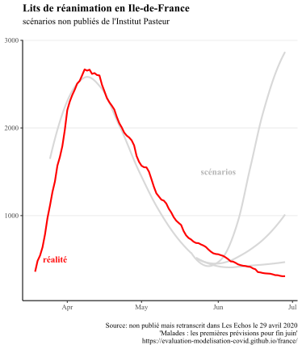
Impact politique et médiatique
Bien que le rapport ayant conduit à ces modélisations n’a pas été à notre connaissance rendu public, celles-ci ont néanmoins été communiquées à la presse et à l’exécutif, comme le rapporte l’article des Echos :
Ce sont peut-être les modélisations réalisées par l’Institut Pasteur pour l’ARS Ile-de-France et l’AP-HP -par le Pr Simon Cauchemez - qui invitent à la prudence le gouvernement. Datées de mardi et à vocation interne, elles montrent que le nombre de patients en réanimation restera longtemps élevé, en tout cas jusqu’à l’été. Et cela quels que soient les scénarios.
La confidentialité du rapport dont sont issues ces courbes pose la question de la transparence des modélisations. De manière similaire, le rapport du Conseil Scientifique du 12 mars 2020 faisait référence aux modélisations de l’Imperial College utilisées dans le rapport en ces termes “Neil Ferguson, communication personnelle”, sans information additionnelle.
Discussion sur les hypothèses des scénarios
(technique)
Les modélisations n’étant pas publiques, il ne nous a pas été possible d’étudier les hypothèses des scénarios. L’article des Echos fait simplement mention de différents taux de reproduction du virus, de 1.2, 1.5, ou plus.
3. Novembre 2020, 2e vague, et 2e confinement
Contexte
Le 26 octobre, l’Institut Pasteur produit des scénarios d’évolution de l’épidémie en l’absence de confinement. Ce rapport n’a à notre connaissance pas été rendu public, et nous n’avons pas pu le consulter. Nous avons simplement trouvé une figure extraite du rapport, que l’on peut trouver sur cette page.
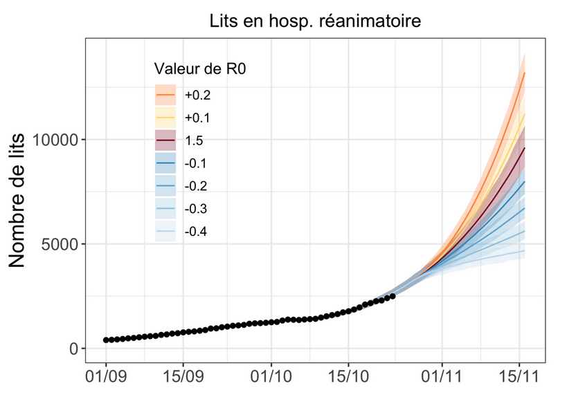
Le 28 octobre, face à la perspective présentée par ces chiffres, Emmanuel Macron annonce un confinement généralisé, qui prendra effet le 30 octobre.
Le 30 octobre, l’Institut Pasteur produit une mise à jour de ses scénarios pour tenir compte de l’impact du confinement. Le rapport n’a pas été rendu public à notre connaissance. Certains médias y ont cependant eu accès, et ont reproduit les scénarios sous forme d’infographie. L’article des Echos constitue notre source pour nos graphiques.
Comparaison des scénarios aux données réelles
Le scénario le plus optimiste est proche du pic réel de lits occupés en réanimation (+15%). Le scénario médian et le plus pessimiste se trouvent eux à +30% et +100%.
Lits de réanimation
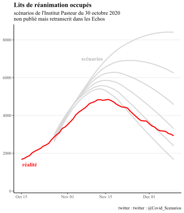
Admissions en réanimation
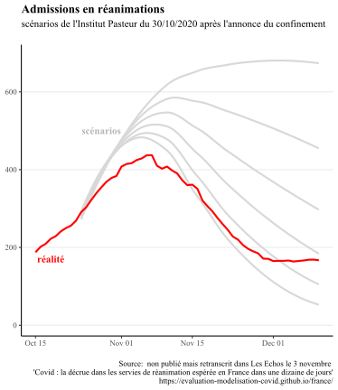
Impact politique et médiatique
Les modélisations du 26 octobre ont été un des élément déclencheur du 2ème confinement. Notamment, lors de son allocution du 28 octobre, Emmanuel Macron a annoncé que le nombre de patients en réanimation dépasserait les 9000 “quoi que nous fassions”. Le pic réel sera deux fois moins élevé, à environ 4800 lits de soins critiques. On constate qu’en vue de justifier une décision politique, seule la modélisation la plus pessimiste a été mise en avant par l’exécutif. Elle a aussi été présentée comme une certitude, alors qu’il ne s’agissait que d’un scénario parmi d’autres.
Ces modélisations ont également été largement reprises dans la presse: “Deuxième vague : les scénarios qui inquiètent” titrait ainsi LCI après l’annonce du 2ème confinement, présentant les scénarios dont les pics de réanimation étaient de 5500, 6200 et 9000 patients.
Discussion sur les hypothèses des scénarios
(technique)
Le rapport n’ayant pas été rendu public, il ne nous a pas été possible d’explorer en détail les hypothèses des scénarios. Selon les éléments rapportés par Les Echos, les différents scénarios correspondent à différentes valeurs de taux de reproduction “R” de 0.7 à 1.2, reflétant une efficacité plus ou moins marquée du confinement.
4. Hiver 2021, couvre-feu étendu
Contexte
Au cours d’un hiver 2020-2021 marqué par un couvre-feu étendu, une dégradation de la situation sanitaire a mené Inserm et l’Institut Pasteur à publier des scénarios de modélisations de mi-janvier à mi-février. Ces scénarios ont servi de base pour envisager la mise en place d’un confinement strict début février, qui n’aura finalement pas eu lieu, offrant la possibilité de comparer les projections à ce qu’il s’est réellement passé.
De premiers confinements régionaux sont mis en place le 20 mars, suivis plus tard par d’autres jusqu’au confinement national le 3 avril. Le temps de latence entre la mise en place des mesures et leur effet sur les hospitalisations étant au minimum d’une semaine, voire 2 à 3 semaines comme l’indique le rapport du conseil scientifique (“les premiers effets des mesures adoptées […] ne peuvent apparaître qu’après deux à trois semaines”), nous arrêtons notre graphique au 27 mars. Au-delà, il n’est plus légitime de comparer la dynamique de la pandémie aux scénarios “sans confinement”.
Avant ces dates, un certain nombre de mesures n’ont pas pu impacter la dynamique nationale de l’épidémie : le 25 février confinement le week-end à Dunkerque et une partie des Alpes-Maritimes, et le 4 mars confinement le week-end dans le Pas-de-Calais, ainsi que les centres commerciaux de plus de 10 000 m2 fermés.
Comparaison des scénarios aux données réelles : scénarios de
l’Inserm
Les scénarios réalisés pendant 1 mois pointent tous vers une augmentation exponentielle des admissions à l’hôpital. La réalité sera une légère diminution suivi d’une augmentation ramenant environ au niveau initial. Quasiment tous les scénarios dépassent les 30 000 admissions hebdomadaires avant la mi-mars sans signe de ralentissement de la dynamique, alors que la réalité se trouvait aux alentours de 10 000, soit 3 fois moins. Le scénario le plus optimiste surestime les hospitalisation d’un facteur 50-100%.
Scénarios du 16 janvier
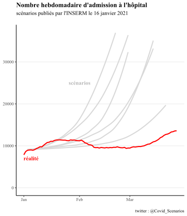
Scénarios du 2 février
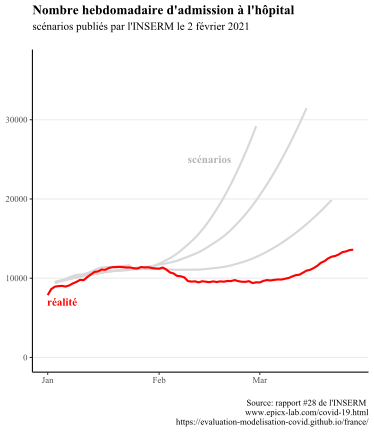
Scénarios du 14 février
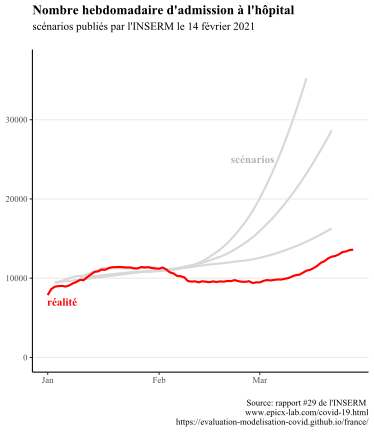
Comparaison des scénarios aux données réelles : scénarios de
l’Institut Pasteur
Pour le rapport du 8 février, les 2 scénarios principaux se prolongeant en mars reflètent une hypothèse “sans vaccination” et une hypothèse “optimiste” de vaccination. Il est précisé qu’ « en pratique, l’impact de la campagne actuelle est susceptible d’être intermédiaire entre les scénarios avec et sans vaccination », d’où notre choix de représenter ces 2 courbes. Plus loin dans le rapport sont présentés 2 autres variantes secondaires illustrant l’influence d’une faible variation du taux de reproduction : ce sont les courbes s’arrêtant en mars.
Seul le scénario le plus optimiste colle à la réalité, bien que ce n’était pas le scénario principal présenté aux décideurs. Les autres surestiment les admissions réelles d’un facteur 50-100%.
Pour le rapport du 23 février, les scénarios présentés collent globalement bien à l’observation. Il n’est pas fait mention du décalage observé entre la réalité et les scénarios publiés 15 jours auparavant.
Scénarios du 8 février
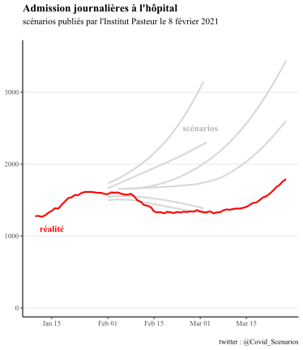
Scénarios du 23 février
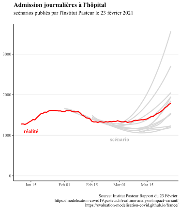
Auto-évaluation de l’Institut Pasteur
Une évaluation rétrospective portant sur le rapport du 8 février sera faite dans un rapport ultérieur du 26 avril. Il y est indiqué que
“dès le 8 février, ce modèle avait anticipé que le couvre-feu serait efficace pour contenir la circulation du virus historique mais n’empêcherait pas une augmentation importante des hospitalisations en l’absence de mesures supplémentaires”
Cette affirmation est accompagnée de la figure ci-dessous. En 1 an de pandémie, cette figure constituera la première comparaison rétrospective officiellement publiée par l’Institut Pasteur.
Nous n’avons cependant pas trouvé une telle projection dans le rapport du 8 février. Toutes celles que nous avons trouvée sont représentées sur nos graphiques présentés ci-dessus.

Impact politique et médiatique
Les prévisions de l’INSERM ont été mises en avant dans un rapport spécial du Conseil Scientifique qui demandait la mise en place d’un confinement strict à partir du lundi 8 février 2021. Selon ces modélisations, le nombre d’hospitalisations hebdomadaires aurait dû être de plus de 30 000 à cette date (en réalité autour de 10 000), et continuer d’augmenter exponentiellement sans confinement strict (qui n’aura finalement lieu qu’un mois plus tard).
Discussion sur les hypothèses des scénarios
(technique)
A propos des scénarios de l’INSERM :
rapport du 16 janvier : les scénarios correspondent à 3 taux de reproduction du variant historique (1, 1.1 et 1.2), couplés à un variant alpha 50% ou 70% plus transmissible. Les courbes sont issues de la figure 1.
rapport du 2 février : les scénarios correspondent à 3 taux de reproduction du variant historique (0.9, 1.1 et 1.2) couplés à un variant alpha 50% plus transmissible. Les courbes sont les courbes grises de la figure 2 (redondance avec les courbes des figures 1 et 2).
rapport du 14 février : variant alpha 50% plus transmissible. La transmissibilité du virus historique, n’est pas renseignée. En plus de la projection standard, 2 scénarios explorant une variation de la transmission du variant historique de +/- 10% illustrent un allègement ou un renforcement des mesures. La réalité n’a correspondu à aucun de ces 2 cas de figure, mais nous avons fait le choix de représenter ces 2 scénarios pour ne pas nous faire accuser d’exclusion arbitraire (la variation de 10% pouvant se produire naturellement de manière aléatoire).
A propos des scénarios de l’Institut Pasteur :
rapport du 8 février : les scénarios correspondent à 3 taux de reproduction du variant historique (0.9, 0.95 et 1), couplés à un variant alpha 40%, 50% ou 70% plus transmissible. Les courbes sont issues des figures 2a, 6a, 7c
rapport du 23 février : de nombreuses variantes sont proposées, car comme le souligne le rapport face à la grande incertitude “une unique prévision pour les prochains mois n’est pas possible”. Dans le détail les différentes hypothèses portent sur la plus grande transmissibilité du variant alpha (+40%, 50% ou 70%) et un changement de trajectoire épidémique (diminution et augmentation de 8% ou 16%) qui intervient à différentes dates (22 février ou 8 mars). Les courbes sont extraites des figures 2c, 5a, 5c, 5e, en s’arrêtant au 27 mars comme expliqué dans le paragraphe “contexte”.
Le rapport du 16 janvier de l’INSERM mérite précision, car il y est dit que l’effet du couvre-feu anticipé à 18 heures n’est pas pris en compte, mais que le scénario le plus optimiste pourrait refléter la mesure. Aurions-nous dû ne garder que celui-ci et exclure les autres scénarios ? Notre décision de tous les conserver s’appuie sur plusieurs points :
Tout d’abord les auteurs ont fait le choix de les représenter, indiquant qu’ils validaient eux-mêmes la pertinence de ces scénarios. En effet ils n’hésitent pas à affirmer que “les nouvelles hospitalisations devraient atteindre environ 25 000 entre mi-février et début avril en l’absence d’intervention” »
En s’appuyant sur ces résultats, ils n’hésitaient pas non plus à donner des recommandations politiques explicites « Ces résultats montrent la nécessité de renforcer les mesures de distanciation sociale » et ce alors même bien que le couvre-feu, dont le but même est d’éviter des mesures plus restrictives, n’était pas modélisé…
Enfin, on voit que les scénarios du 16 janvier sont très similaires à ceux du 2 février, alors même que ceux-ci “intègrent de façon effective toutes les mesures de distanciation sociale”, indiquant que la prise en compte du couvre-feu ne change pas grand-chose
5. Mai-Juin 2021, sortie du 3e confinement
Contexte
Des scénarios sont sortis les 26 avril et 21 mai, portant sur les trajectoires épidémiques pour la sortie du 3e confinement et l’été. Nous arrêtons les comparaisons à la mi-juin, moment de l’apparition variant delta, non pris en compte dans les modèles.
Pour le rapport du 21 mai, nous n’avons pas eu besoin de mener nous-mêmes une analyse. En effet Simon Cauchemez, en charge de l’équipe modélisation de l’Institut Pasteur, avait déjà publié une comparaison informelle sur son compte twitter, reproduite ici. A notre connaissance cela n’a pas été fait pour le rapport du 26 avril, et nous avons donc procédé nous-mêmes à la comparaison.
Comparaison des scénarios aux données réelles
Pour le premier rapport, les scénarios se situent à la mi-juin au-dessus de la réalité, la surestimation allant d’un peu moins de 100% à 500%.
En revanche la décrue observée suit fidèlement le scénario du second rapport, comme le montre la capture d’écran de Simon Cauchemez. Ce dernier ne fait pas mention du premier rapport.
Scénarios du 26 avril
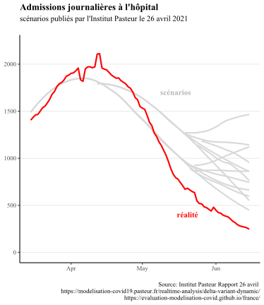
Scénarios du 21 mai

Impact politique et médiatique
Ces modélisations ont appuyé le rapport du Conseil Scientifique du 6 mai 2021. Bien que le Conseil Scientifique précise que “Ces projections […] ne sont pas des prédictions”, il s’appuie sur celles-ci pour estimer que “sous des hypothèses plausibles, un rebond important de l’épidémie est possible durant la période estivale si les mesures de contrôle sont relâchées trop rapidement, et cela même lorsqu’on considère un rythme important de vaccination.”. C’est un des arguments qui à poussé le Conseil Scientifique à se positionner en faveur d’une réouverture des activités sociales “prudente et maîtrisée” suite au 3ème confinement.
Discussion sur les hypothèses des scénarios
(technique)
Pour le rapport du 26 avril, les courbes sont extraites des figures 3b et 3d. Les hypothèses faites dans les scénarios sont les suivantes :
Un variant alpha plus transmissible de 60% ou 40% comparé à la souche originelle
Des levées des mesures plus ou moins rapides, se traduisant par des taux de reproduction de reprise R de 1 à 1.3, à partir du 15 mai. Nous avons exclu le scénario le plus pessimiste (R = 1.3) qui correspondait à une levée quasi totale des mesures dès la mi-mai, ce qui n’a pas été le cas.
Des hypothèses médianes ou pessimistes concernant la réduction des hospitalisations
Un rythme de distribution des doses de vaccin de 350 000 ou 500 000 doses par jour. Nous n’avons retenu que les scénarios à 500 000 doses/jour, qui sont proches de la réalité, comme le montre le graphique ci-dessous.

Pour le rapport du 21 mai, nous n’avons pas eu besoin de vérifier les hypothèses, Simon Cauchemez ayant lui-même comparé la trajectoire épidémique à ses scénarios.
Dans les 2 cas nous arrêtons la comparaison à la mi-juin, lorsque l’apparition du variant delta non prévue par les modèles rend les hypothèses caduques.
6. Août 2021, 4e vague et variant delta
Contexte
Un premier rapport de l’Institut Pasteur est sorti le 9 juillet 2021 dans un contexte de propagation du variant delta. Deux des trois scénarios présentés anticipaient pour fin août un nombre de lits de soin critiques au moins égal à la 2ème vague, et en l’absence de mesures un pic courant septembre bien au-dessus de la 1ere vague.
Face à la perspective d’une submersion hospitalière que suggéraient ces scénarios, le passe sanitaire élargi a été acté le 21 juillet, entraînant une forte augmentation des vaccinations et rendant caduques les hypothèses du rapport du 9 juillet.
Pour remédier à cela, l’Institut Pasteur a publié 2 nouveaux rapports, les 26 juillet et 5 août, afin de tenir compte de l’effet du pass sanitaire ; ce sont ces 2 rapports que nous comparons à la trajectoire réelle.
Comparaison des scénarios aux données réelles
Pour le premier rapport, la réalité est environ 2 fois moins grande que les scénarios les plus optimistes, 3 à 4 fois moins grande que les scénarios médians, 10 fois moins grande que les scénarios pessimistes.
Le rapport publié 10 jour plus tard corrige partiellement cette surestimation, la réalité correspondant environ au scénario le plus optimiste, mais restant 2 fois moins grande que le scénario médian et 4 fois moindre que le scénario pessimiste.
Scénarios du 26 juillet
Lits de soins critiques

Admissions en soins critiques
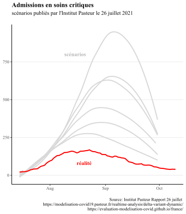
Admissions à l’hôpital
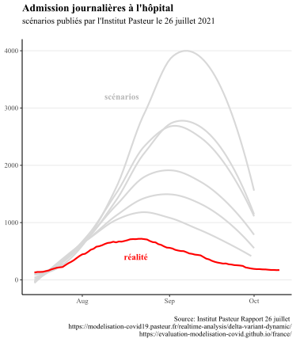
Scénarios du 5 août
Lits de soins critiques
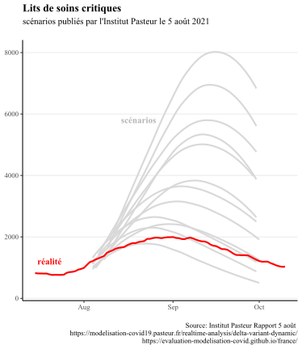
Admissions en soins critiques
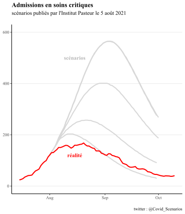
Admissions à l’hôpital
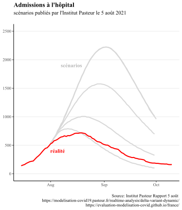
Impact politique et médiatique
En ligne avec les projections présentées, le président du conseil scientifique Jean-François Delfraissy prévoyait alors une situation hospitalière compliquée pour fin août lors de son audition devant les sénateurs :
“Le modèle montre bien que d’ici fin août, nous allons nous trouver dans une situation très complexe, avec un impact sur le système de soins”
Cette mise en avant des projections de l’Institut Pasteur au Sénat est intervenu avant que celui-ci ne se prononce sur l’extension du pass sanitaire, et a donc pu jouer un rôle dans l’avis des sénateurs.
Les modélisations de l’Institut Pasteur ont été également utilisé par le Conseil d’Etat comme argument pour rejeter les demandes de référés-libertés au sujet de l’extension du pass sanitaire. Pour rejeter ces demandes, le Conseil d’Etat a notamment expliqué que
Il est intéressant de noter que le Royaume-Uni a été confronté à la même situation : une augmentation des hospitalisations en juillet, accompagnée de scénarios suggérant une submersion de l’hôpital. Contrairement à la France, le Royaume-Uni n’a pas mis en place de pass sanitaire et a levé presque l’intégralité des mesures de contrôle. Nous détaillons cela dans la section suivante.les données “pourraient se révéler encore plus préoccupantes au début du mois d’août, selon les modélisations de l’Institut Pasteur.”
Discussion sur les hypothèses des scénarios
(technique)
Le scénarios du premier rapport sont extraits des figures 4, 5 et 6. Les scénarios dont les hypothèses ne collaient pas à la réalité ont été exclus de la comparaison, permettant de ramener le nombre de variantes de 108 à seulement 6 pour les admissions et 12 pour le nombre de lits occupés. Détails des hypothèses :
Durée de passage en soins critiques : 14.6 jours ou 10 jours
Réduction du nombre de reproduction effectif le portant à 1.5, 1.8 ou 2 en raison des mesures barrières et du pass sanitaire.
Adhésion vaccinale des >60 ans : 90 ou 95%. Nous avons seulement retenu les scénarios 90%, en ligne avec le graphique ci-dessous.
Adhésion vaccinale des 18-59 ans : 70% ou 90%. Nous avons seulement retenu les scénarios 90%, en ligne avec le graphique ci-dessous.
Adhésion vaccinale des 12-17 ans : 30%, 50% 70%. Nous n’avons pas eu besoin de vérifier cette hypothèse, car pour une haute couverture vaccinale des adultes (90%), la vaccination des adolescents n’a aucune incidence sur la trajectoire hospitalière selon les propres résultats du rapport.
Doses de vaccins distribués par jour : 500 000, 700 000 ou 800 000. Nous avons éliminé les scénarios à 800 000 doses/jour, trop éloignés de la réalité (voir graphique ci-dessous). Celui à 700 000 ne correspond qu’au début du mois d’août, mais nous avons fait le choix de le conserver.
Le second rapport fait uniquement des hypothèses sur la durée de passage en soins critiques (10, 14 ou 17 jours) et sur le nombre de doses de vaccin distribuées par jour (600 000, 700 000 800 000). Au vu des chiffre ci-dessous, nous avons exclus les scénarios à 700 000 et 800 000 doses/jour.


7. Eté 2021, Freedom Day au Royaume-Uni
Contexte
Le Royaume-Uni a été confronté en juillet à une situation similaire à la France : une augmentation des hospitalisations, accompagnée de scénarios anticipant une submersion de l’hôpital. Contrairement à la France, le Royaume-Uni n’a pas mis en place de pass sanitaire et a levé presque l’intégralité des mesures de contrôle. Nous détaillons cela dans la section suivante.
Nous présentons une comparaison entre scénarios de modélisation et réalité dans le cas du “Freedom Day”, jour de levée de la quasi-totalité des mesures restrictives au Royaume-Uni. Le 19 juillet, dans le cadre de son plan de sortie de crise, le gouvernement britannique a en effet décidé de lever la plupart de ses mesures de restrictions (telles que les limitations de capacité dans les lieux accueillant du public, port du masque obligatoire ou encore limitations de déplacement).
Comparaison des scénarios aux données réelles
Les données présentées ci-dessous comparent la réalité des patients hospitalisés avec les différents scénarios de modélisations visant à prévoir l’impact de la levée des restrictions. Les données sont issues du rapport du 7 juillet du SAGE (Scientific Advisory Group for Emergencies), et la mise en forme provient du site du The Spectator.
Le pic réel se trouve sous le scénario le plus optimiste, les scénarios médians sont 2 à 3 fois supérieurs, et le scénario le plus pessimiste est plus de 5 fois supérieur.

Impact politique et médiatique
Cette levée des restrictions avait été fermement critiquée par de nombreux scientifiques dans une lettre ouverte au prestigieux journal médical The Lancet, qui l’avait qualifiée de “dangereuse et prématurée”. Cette lettre ouverte a été reprise par différents médias britanniques et internationaux, qui s’appuyaient sur ces modélisations pour annoncer “une troisième vague importante d’hospitalisations et de décès” à la suite de la levée des restrictions, décrite comme une “expérience dangereuse sans éthique”.
Le fait que les modélisations aient largement surestimées l’impact de la réouverture a été décrit dans le journal scientifique Nature par un épidémiologiste renommé:
Personne ne comprend vraiment ce qu’il se passe.
8. Automne-Hiver 2021, pré-Omicron
Contexte
Dans un contexte notamment marqué par la généralisation du pass sanitaire, l’Institut Pasteur a publié des modélisations sur la dynamique de l’épidémie pendant la transition automne-hiver. Bien que l’arrivée du variant Omicron ait rendu obsolète ces modélisations courant décembre, il reste une période de 2 mois sur laquelle elles peuvent être comparées à la réalité.
Comparaison des scénarios aux données réelles
La plupart des scénarios se trouvent au niveau d’une circulation épidémique contenue, en-dessous des admissions hospitalières réelles d’un facteur 4 à 6.
Les scénarios plus proches de la réalité correspondent à un “relâchement des mesures/comportements de 40%”, qui ramène au “niveau de contrôle mesuré en juin-juillet”, couplé à une modulation défavorable du climat. Bien que les mesures de contrôle n’aient pas été relâchées au niveau de juin-juillet, quand il n’y avait pas de pass sanitaire, il nous est impossible de mesurer le “relâchement des comportements”, et nous avons donc gardé ces scénarios.

Impact politique et médiatique
Ces modélisations ont été reprises par le Conseil Scientifique dans son rapport du 5 octobre 2021. Il s’est appuyé dessus notamment pour recommander de maintenir le pass sanitaire pendant une période courant a minima jusqu’au 15 novembre 2021 (première prolongation du pass sanitaire). Elles ont été également reprises dans la presse nationale.
Discussion sur les hypothèses des scénarios
(technique)
Nos courbes sont issues de la figure 7.
Des comportements/mesures réduisant les transmissions au niveau de juin/juillet avant le pass sanitaire, au niveau actuel (-40% par rapport à juin/juillet), où à un niveau intermédiaire (-20%)
Une modulation du climat qui augmente les contaminations de 33% (estimé), 20% ou 40%
Un relâchement des mesures/comportements au 15 octobre ou au 15 novembre. Les dates du 15 décembre et 15 janvier étaient également étudiées mais ne nous intéressent pas car hors de notre période d’étude
3 variantes d’hypothèses sur l’efficacité vaccinale contre l’hospitalisation et l’infection respectivement de 95% et 60% (référence), 90% et 60%, et 95% et 80%.
9. Décembre 2021, seconde vague delta
Contexte
Dans un contexte de seconde vague delta, l’Institut Pasteur a produit 2 rapports le 29 novembre et le 2 décembre 2021 avec des scénarios couvrant l’hiver et le printemps 2022. Malheureusement l’émergence du variant omicron 2 semaines plus tard rend caduques les hypothèses et ne permet pas une comparaison à la réalité.
Une critique souvent apportée à la comparaison des données réelles aux “scénarios” telle que réalisée ci-dessus est que ces derniers ne constituent pas des “prédictions”, et servent simplement à donner une idée des grandes tendances et de l’impact de différentes mesures.
Néanmoins, au-delà des scénarios présentés dans ses rapports, l’Institut Pasteur publié également des “Projection à court terme des besoins hospitaliers” sur cette page , régulièrement mise à jour. Ici, le but est bien de prévoir correctement le nombre de malades, l’Institut précisant que “l’erreur relative pour les projections du nombre de lits de soins critiques au niveau national est de 11% à 14 jours.”
Nous comparons ici la projection du modèle 2 semaines avant le pic de la seconde vague delta de mi-décembre 2021. Ce pic est intervenu juste avant l’émergence du variant omicron, qui a changé la donne dans les semaines qui ont suivi.
Comparaison des scénarios aux données réelles
Au moment du pic du variant delta, la projection du modèle correspond à une surestimation 2 semaines plus tard de 30% pour les lits de soins critiques, et d’environ 40% pour les autres indicateurs.
Malgré une précision moyenne de 10% du modèle, au moment du pic l’erreur réelle aura été bien plus élevée. Nous aurions souhaité comparer les projections du modèle aux autres pics (février 2021, avril 2021, août 2021) afin d’évaluer s’il s’agissait d’une erreur ponctuelle ou d’un biais systématique sur les pics. Une telle évaluation est importante car c’est l’anticipation d’un pic hospitalier qui conditionne la réponse politique.
Malheureusement la mise à jour régulière des projections sur la page présentant les résultats écrase les projections publiées précédemment, et nous n’avons pas pu effectuer cette évaluation systématique. Une conservation des résultats précédents en open data aiderait une telle démarche et une appropriation par les citoyens.
Lits de soins critiques

Lits d’hôpital

Admissions en soins critiques

Admissions à l’hôpital

Discussion sur les hypothèses des scénarios
(technique)
Il n’y pas de respect des hypothèses à vérifier pour ces projections. L’horizon de 2 semaines est trop court pour qu’une mesure mise en place après publication viennent modifier la trajectoire épidémique. En effet, comme le rappelle le rapport du conseil scientifique, “les premiers effets des mesures adoptées […] ne peuvent apparaître qu’après deux à trois semaines”.
10. Janvier 2022, variant Omicron
Contexte
Suite à l’apparition du variant Omicron, l’Institut Pasteur a publié un premier rapport le 27 décembre 2021, présentant plus d’une centaine de scénarios. En effet, il y est précisé qu’“étant donné les incertitudes […], il n’est pas possible de quantifier précisément l’impact qu’aura la vague Omicron”. Nous n’avons donc pas analysé ce rapport.
Le rapport suivant du 7 janvier reprend pour base le précédent à la lumière des nouvelles données, et exclut les scénarios ne collant aux propriétés d’Omicron, rendant possible l’analyse des résultats.
Nous analysons également un rapport publié le 15 février, qui constitue une auto-évaluation comparant ce qui a été “prédit” (terme utilisé par le rapport) à ce qui s’est réellement passé.
Comparaison des scénarios aux données réelles
Le rapport distinguait des scénarios “probables” (en trais pleins) de scénarios “moins probables” (en pointillés). Il distinguait également une hypothèses d’efficacité à 6 mois de la dose de rappel contre les infections de 85% ou 60%.
La réalité est une efficacité initiale de 50% puis nulle au-delà de 3 mois (voir paragraphe “Auto-évaluation de l’Institut Pasteur”), excluant a minima le scénario 85%. Mais l’Institut Pasteur l’utilisant pour affirmer dans son rapport rétrospectif que “les dynamiques prédites et observées des admissions quotidiennes sont proches”, nous avons fait le choix de le représenter.
Hypothèse (moins) fausse : efficacité vaccinale 60%
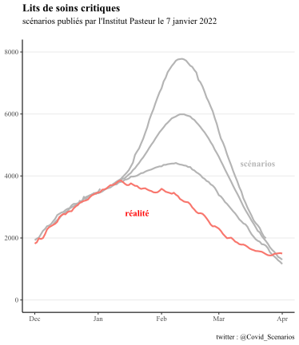
Hypothèse fausse : efficacité vaccinale 85%
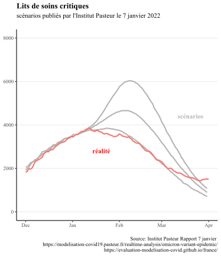
Hypothèse (moins) fausse : efficacité vaccinale 60%
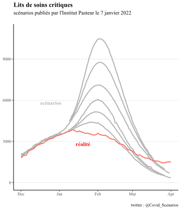
Hypothèse fausse : efficacité vaccinale 85%
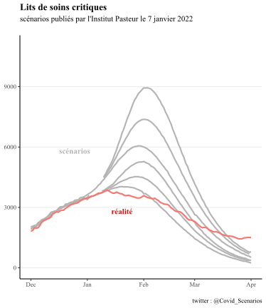
Impact politique et médiatique
Le rapport d’auto-évaluation de l’Institut Pasteur a été repris dans certains articles de presse déclarant que “l’institut Pasteur avait presque tout bon sur l’impact d’Omicron”. Nous détaillons dans le paragraphe suivant les raisons qui nous font penser que cette affirmation est à prendre avec des pincettes.
Auto-évaluation de l’Institut Pasteur et discussion des
hypothèses
Plusieurs points soulèvent question dans l’auto-évaluation menée par l’Institut Pasteur présentée ci-dessous. On notera au passage que notre propre rétrospective est cohérente avec la figure présentée par l’Institut.

La plus évidente est l’absence totale d’allusion à l’efficacité vaccinale et le choix de ne représenter que les courbes illustrant une efficacité vaccinale de 85%, contrairement à nos graphiques. Pourtant une note officielle de la DREES titre explicitement :
“Au-delà de trois mois, la dose de rappel ne semble plus protéger contre les infections au Covid-19”
Au moment de la publication du rapport, les données de surveillance britanniquesindiquaient déjà une efficacité vaccinale de seulement 40% au bout de 10 semaines, bien loin des 80%. Leurs données plus récentes (ci-dessous) confirment une efficacité initiale de 45% puis presque nulle au-delà de 3 mois. L’équipe de Pasteur pouvait-elle ignorer ces éléments au moment de son auto-évaluation ?

Par ailleurs, contrairement à nous, l’auto-évaluation ne présente pas les scénarios “moins probables”. Se pose alors la question des bonnes pratiques d’évaluation rétrospective, à définir en amont. L’équipe aurait-elle écarté ces scénario si la réalité les avait suivi ?
Nous notons que si l’équipe insiste régulièrement sur le fait que “les scénarios ne sont pas des prédictions”, l’auto-évaluation est moins prudente, le terme “prédit” revenant plusieurs fois dans le rapport, par exemple “les dynamiques prédites et observées des admissions quotidiennes sont également proches.”
Nous rappelons que la vérification de l’adéquation des hypothèses est importante, car comme le rappelle le début de chacun des rapport de l’Institut Pasteur :
“Les trajectoires décrites dépendent des hypothèses faites; si les hypothèses ne se réalisent pas, la dynamique observée pourra être différente des projections.”